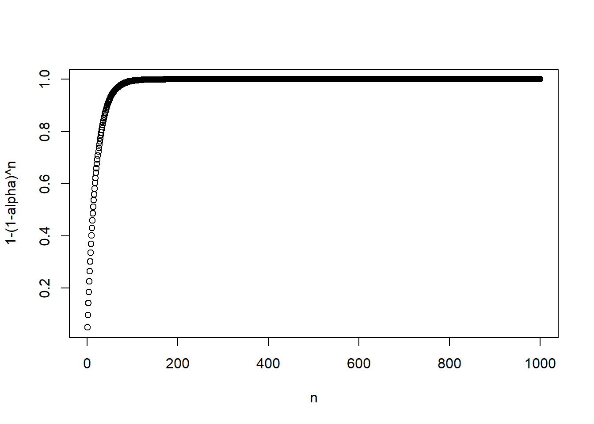

alpha=0.05
n <- 1:1000
p <- 1-(1-alpha)^n
plot(n,p, xlab="n", ylab="1-(1-alpha)^n")
En el contexto de inferencia causal, cometemos el error tipo I al concluir que hay un efecto cuando la \(H_0\) es verdadera, es decir, cuando \(H_0:\;\beta_i=0\). En una investigación fijamos \(\alpha\), la probabilidad de rechazar \(H_0\) cuando \(H_0\) es cierta. Por ejemplo, en economía trabajamos con \(\alpha=0.05\) o \(\alpha=0.01\).
El problema con probar múltiples hipótesis es que inflamos la tasa de error tipo I. Por ejemplo, si tenemos 100 hipótesis en las que la \(H_0\) es cierta y si usamos un valor estándar de \(\alpha=0.05\), esperaríamos rechazar 5 hipótesis por suerte.
Si realizamos una prueba, la probabilidad de cometer un error es \(\alpha\) y la de no cometer un error es \(1-\alpha\).
Si realizamos \(n\) pruebas, la probabilidad de no cometer un error es \((1-\alpha)^n\) y la probabilidad de cometer al menos un error es \(1-(1-\alpha)^n\).
Es decir, la probabilidad de cometer al menos un error crece rápidamente y se acerca a 1.
Veamos esto gráficamente:
alpha=0.05
n <- 1:1000
p <- 1-(1-alpha)^n
plot(n,p, xlab="n", ylab="1-(1-alpha)^n")
Para enfrentar este problema seguimos dos estrategias:
Controlar o ajustar \(\alpha\)
Crear índices que agreguen varias variables
Siguiendo a Shaffer (1995), definimos familias de variables y haremos el ajuste hacia adentro de estas familias. Por ejemplo, en el artículo que estudiamos de Banerjee et al. (2015), las familias son:
Dentro de cada familia tenemos \(n\) hipótesis \(H_i\), con un valor \(p\) asociado \(p_i\). Recordemos que \(p_i\) se define como la probabilidad de observar un estadístico al menos tan extremo como el observado, bajo la \(H_0\). Ordenemos las hipótesis de menor a mayor, con \(p_1\) siendo el valor más pequeño: \(p_1\leq p_2\ldots \leq p_n\).
El método propuesto por Bonferroni controla la tasa de error por familia (FWER por family-wise error rate) definida como la probabilidad de cometer al menos un error tipo I.
Este método consiste en rechazar \(H_i\) si \(p_i\leq \alpha_i\), donde \(\alpha_i\) se escoge de forma que \(\sum_i\alpha_i=\alpha\). Usualmente se hace \(\alpha_i=\frac{\alpha}{n}\).
Por ejemplo, con dos pruebas y \(\alpha=0.05\), \(\alpha_i^B=0.025\).
Noten que esta corrección es bastante conservadora.
De forma equivalente, podemos ver este método como crear unos valores \(p^B\) ajustados: \(p_i^B=\min(p_i\times n,1)\).
¿Por qué preocuparnos por la FWER?
La idea de la FWER tiene sentido si nos preocupa tener incluso un solo falso positivo. En la práctica, podemos vivir con algunos falsos positivos.
Este método controla la tasa de falso descubrimiento. Si \(V\) es el número de falsos rechazos (cuando rechazamos la \(H_0\) que es verdadera) y si \(R\) es el número total de rechazos, entonces \(Q=V/R\) es la proporción de falsos rechazos (por convención \(Q=0\) si \(R=0\)).
Al valor esperado de \(Q\) se le conoce como tasa de falso descubrimiento (FDR por false discovery rate).
Sea \(k\) el más grande de los \(i\) tal que
\[p_i\leq\frac{i}{n}\alpha\] entonces la corrección consiste en rechazar todos los \(H_i\) para \(i=1,2,\ldots,k\).
Noten que esto no es lo mismo que comparar cada \(p_i\) contra su propio umbral: una vez encontrado \(k\), se rechazan todas las hipótesis hasta \(k\), aunque alguna intermedia no cumpla la desigualdad.
En la práctica usamos algún software para programar algoritmos o funciones ya definidas.
Usemos los datos del artículo de Benjamini & Hochberg (1995), que tienen 15 hipótesis (ya ordenadas) y trabajan con \(\alpha=0.05\):
data.pvalues<-read_csv("../files/data_benjamini_hochberg.csv",
locale = locale(encoding = "latin1"))
n <- nrow(data.pvalues)
alpha <- 0.05
data.pvalues# A tibble: 15 × 2
poriginal hipotesis
<dbl> <dbl>
1 0.0001 1
2 0.0004 2
3 0.0019 3
4 0.0095 4
5 0.0201 5
6 0.0278 6
7 0.0298 7
8 0.0344 8
9 0.0459 9
10 0.324 10
11 0.426 11
12 0.572 12
13 0.653 13
14 0.759 14
15 1 15Si hacemos la corrección de Bonferroni:
data.bonferroni <- data.pvalues %>%
mutate(bonferroni_alpha=alpha/n) %>%
mutate(bonferroni_rechazar=ifelse(poriginal<=bonferroni_alpha,1,0))
data.bonferroni# A tibble: 15 × 4
poriginal hipotesis bonferroni_alpha bonferroni_rechazar
<dbl> <dbl> <dbl> <dbl>
1 0.0001 1 0.00333 1
2 0.0004 2 0.00333 1
3 0.0019 3 0.00333 1
4 0.0095 4 0.00333 0
5 0.0201 5 0.00333 0
6 0.0278 6 0.00333 0
7 0.0298 7 0.00333 0
8 0.0344 8 0.00333 0
9 0.0459 9 0.00333 0
10 0.324 10 0.00333 0
11 0.426 11 0.00333 0
12 0.572 12 0.00333 0
13 0.653 13 0.00333 0
14 0.759 14 0.00333 0
15 1 15 0.00333 0Pero si ahora hacemos la de Benjamini & Hochberg:
data.bh <- data.pvalues %>%
mutate(bh_alpha = alpha*hipotesis/n,
cumple = poriginal <= bh_alpha,
k = max(hipotesis[cumple]),
bh_rechazar = ifelse(hipotesis <= k, 1, 0))
data.bh# A tibble: 15 × 6
poriginal hipotesis bh_alpha cumple k bh_rechazar
<dbl> <dbl> <dbl> <lgl> <dbl> <dbl>
1 0.0001 1 0.00333 TRUE 4 1
2 0.0004 2 0.00667 TRUE 4 1
3 0.0019 3 0.01 TRUE 4 1
4 0.0095 4 0.0133 TRUE 4 1
5 0.0201 5 0.0167 FALSE 4 0
6 0.0278 6 0.02 FALSE 4 0
7 0.0298 7 0.0233 FALSE 4 0
8 0.0344 8 0.0267 FALSE 4 0
9 0.0459 9 0.03 FALSE 4 0
10 0.324 10 0.0333 FALSE 4 0
11 0.426 11 0.0367 FALSE 4 0
12 0.572 12 0.04 FALSE 4 0
13 0.653 13 0.0433 FALSE 4 0
14 0.759 14 0.0467 FALSE 4 0
15 1 15 0.05 FALSE 4 0La columna k sale constante porque \(k\) es un solo número para toda la familia. Con estos datos cumple y bh_rechazar coinciden, pero no tienen por qué hacerlo: si alguna hipótesis intermedia no cumpliera la desigualdad, de todas formas se rechazaría por estar antes de \(k\).
Bonferroni rechaza tres hipótesis y Benjamini & Hochberg rechaza cuatro.
p.adjustEn lugar de comparar cada \(p_i\) contra su umbral, p.adjust devuelve los valores \(p\) ajustados, que comparamos contra \(\alpha\):
data.ajustados <- data.pvalues %>%
mutate(p_bonferroni = p.adjust(poriginal, "bonferroni"),
p_bh = p.adjust(poriginal, "BH"),
rech_bonferroni = ifelse(p_bonferroni <= alpha, 1, 0),
rech_bh = ifelse(p_bh <= alpha, 1, 0))
data.ajustados# A tibble: 15 × 6
poriginal hipotesis p_bonferroni p_bh rech_bonferroni rech_bh
<dbl> <dbl> <dbl> <dbl> <dbl> <dbl>
1 0.0001 1 0.0015 0.0015 1 1
2 0.0004 2 0.006 0.003 1 1
3 0.0019 3 0.0285 0.0095 1 1
4 0.0095 4 0.142 0.0356 0 1
5 0.0201 5 0.302 0.0603 0 0
6 0.0278 6 0.417 0.0639 0 0
7 0.0298 7 0.447 0.0639 0 0
8 0.0344 8 0.516 0.0645 0 0
9 0.0459 9 0.688 0.0765 0 0
10 0.324 10 1 0.486 0 0
11 0.426 11 1 0.581 0 0
12 0.572 12 1 0.715 0 0
13 0.653 13 1 0.753 0 0
14 0.759 14 1 0.813 0 0
15 1 15 1 1 0 0Se obtienen exactamente las mismas conclusiones que calculando los umbrales a mano.
Otra forma comúnmente usada de evitar el problema de las múltiples hipótesis es crear índices. Kling, Liebman y Katz (2007) proponen el siguiente promedio de los \(z\)-score para generar un solo índice. Para ello, se sigue el siguiente procedimiento:
Definir las familias y las variables o indicadores que componen cada familia, donde \(y_{ij}\) es la \(j\)-ésima variable en la familia con \(J\) variables.
Definir las variables \(y_{ij}\) de tal forma que mayores valores se interpreten como mejora.
Crear \(z_{ij}\) como \(z_{ij}=\frac{y_{ij}-\bar{y}_j^C}{sd(y_j)^C}\sim(0,1)\), es decir, estandarizar cada una de las \(J\) variables usando al grupo de control como referencia, de modo que en ese grupo tenga media 0 y varianza 1.
Crear \(z_i\), un solo índice para cada individuo que agregue los \(J\) \(z\)-scores creados antes.
El procedimiento descrito en Banerjee et al. (2015) es bastante general, pues incluye el caso donde hay varias rondas de seguimiento y varios países.
Podemos escribir el índice descrito como:
\[z_i=\frac{\bar{z}_i-\overline{\bar{z}}^C}{sd(\bar{z}^C)}\]
donde \(\bar{z}_i=\frac{1}{J}\sum_{j=1}^{J} z_{ij}\) y \(\overline{\bar{z}}^C\) y \(sd(\bar{z}^C)\) son la media y la desviación estándar de \(\bar{z}_i\) en el grupo de control.
Es importante notar que la reestandarización se hace sobre el promedio \(\bar{z}_i\), no sobre cada \(z_{ij}\). Cada \(z_{ij}\) ya tiene media 0 y desviación estándar 1 en el control por construcción, así que estandarizarlos otra vez no haría nada. El promedio, en cambio, tiene desviación estándar menor que 1, y cuánto menor depende de las correlaciones entre las variables de la familia.
Esta transformación tiene la ventaja de que en la siguiente regresión de efecto de tratamiento
\[z_i=\phi+\beta T_i + X_i'\gamma+\varepsilon_i\]
el coeficiente \(\beta\) se interpreta como el efecto del tratamiento expresado en desviaciones estándar del grupo de control (\(\beta=0.2\) significa que el tratamiento mueve el índice 0.2 desviaciones estándar).
Noten que todas las variables dentro de la familia pesan igual. Quizás nos gustaría tomar en cuenta la correlación entre las variables dentro del índice.
Anderson (2008) propone el siguiente índice, que puede verse como una generalización del de Kling:
\[\bar{s}_i=\frac{1}{W_{i}}\sum_{j\in J_i} w_{j} z_{ij}\]
donde \(w_{j}\) es el peso para la variable o indicador \(j\) y \(W_i=\sum_{j\in J_i}w_{j}\), con \(J_i\) el conjunto de variables observadas para el individuo \(i\).
En este índice, \(w_{j}\) es la suma de la \(j\)-ésima fila de \(\Sigma^{-1}\), la inversa de la matriz de covarianzas de \(z_{ij}\). Esto lo hace más eficiente que el índice de Kling, al otorgar menor peso a las variables más correlacionadas entre sí: las variables poco correlacionadas aportan información nueva y por eso pesan más.
Además usa toda la información disponible, pues las variables faltantes simplemente se ignoran y los pesos restantes se renormalizan, de modo que las variables con menos valores faltantes terminan pesando más. En la práctica, \(\bar{s}_i\) puede estandarizarse con respecto al grupo de control para facilitar su interpretación. Anderson (2008) no lo menciona explícitamente, pero diversos programas incluyen la opción para hacerlo.
Anderson (2008) muestra que podemos calcular \(\bar{s}_i\) como:
\[\bar{s}_i=(\mathbf{1}'\Sigma^{-1}\mathbf{1})^{-1}(\mathbf{1}'\Sigma^{-1}\mathbf{z}_{i})\]
donde \(\mathbf{1}\) es un vector columna de unos y \(\mathbf{z}_i\) es un vector columna de las variables estandarizadas de \(i\). Tal como está escrita, esta expresión supone que el individuo \(i\) tiene observadas las \(J\) variables.
Para el caso general basta introducir una matriz de selección. Sea
\[M_i=\text{diag}(m_{i1},\ldots,m_{iJ}), \qquad m_{ij}=\begin{cases}1 & \text{si la variable } j \text{ está observada para } i\\ 0 & \text{si falta}\end{cases}\]
Entonces el índice para cualquier patrón de valores faltantes es
\[\bar{s}_i=(\mathbf{1}'\Sigma^{-1}M_i\mathbf{1})^{-1}(\mathbf{1}'\Sigma^{-1}M_i\mathbf{z}_{i})\]
La matriz \(M_i\) hace dos cosas a la vez. En el numerador, \(M_i\mathbf{z}_i\) pone en cero las entradas faltantes, de modo que sólo las variables observadas contribuyen a la suma. En el denominador, \(M_i\mathbf{1}\) deja únicamente los pesos de esas mismas variables, así que el normalizador es exactamente \(W_i=\sum_{j\in J_i}w_j\). Como \(\Sigma^{-1}\) es simétrica, \(M_i\) ocupa la misma posición en ambos factores.
Cuando no hay valores faltantes, \(M_i\) es la matriz identidad y recuperamos la expresión anterior. Noten además que los pesos \(w_j\) se calculan una sola vez a partir de la \(\Sigma^{-1}\) de la familia completa: lo que cambia entre individuos no son los pesos sino su normalización. Poner un cero donde falta un dato equivale a suponer que esa persona está en la media del grupo de control en esa variable, lo cual es razonable justamente porque los \(z_{ij}\) están centrados en esa media.